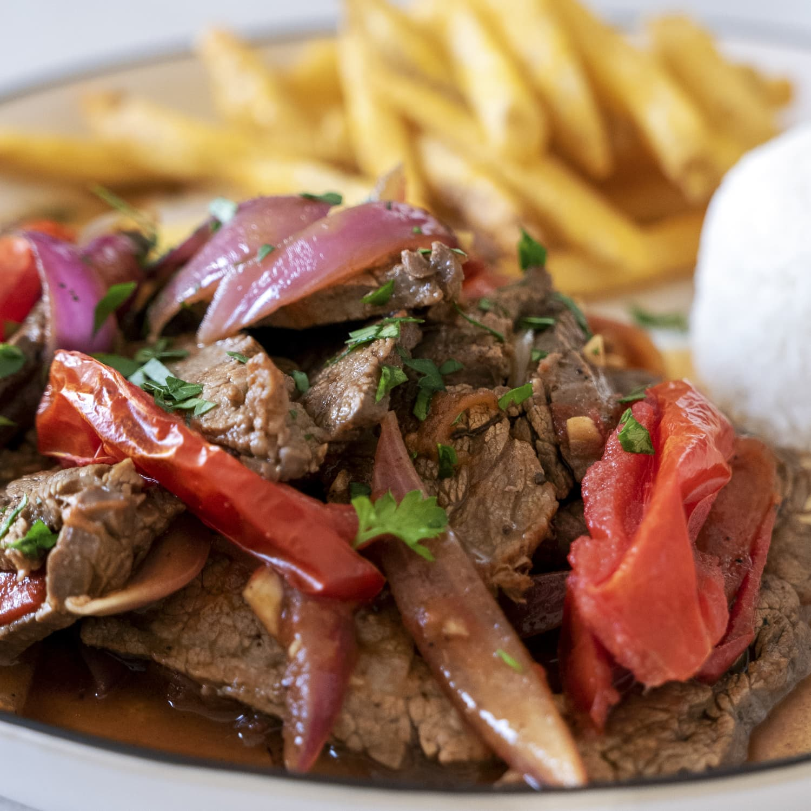

Lomo Saltado

Lomo Saltado is a traditional Peruvian dish from Arequipa
Ingredients
- 2 oz nuts, toasted
- 6 oz onion, chopped
- 2 garlic cloves
- 4 oz Mirasol chili pepper (or 3 tablespoons of Mirasol chili pepper paste)
- 2 tablespoons Ají Amarillo (or 2 tablespoons Ají Amarillo paste)
Directions
- Roast the onion and garlic in a clean saucepan. Reserve.
- Boil the ají Mirasol, changing the water three times. Peel and discard the seeds.
- In a blender process chili peppers, garlic, onion, peanuts, nuts, milks, queso fresco, soda crackers, huacatay leaves or paste. Season with salt.
- In a dish put lettuce leaves, potato slices, cover with the sauce, and decorate with hard-boiled eggs, white cheese, black olives.